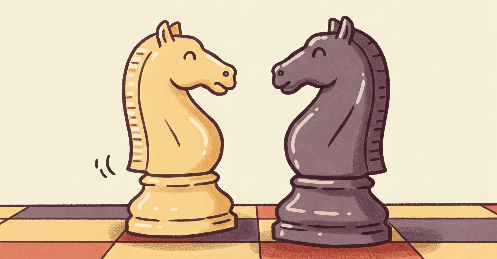

Lezioni di Scacchi a Roma (Appia, Prati, Parioli) e Online
Strategie avanzate e tattiche per giocatori di tutti i livelli, preparazione di aperture e tornei.
Approccio divertente e educativo per giovani menti brillanti dai 5 anni in su.
Incontri personali per un'esperienza di apprendimento immersiva.
Flessibilità e comodità, ovunque tu sia nel mondo.
Foto:@jcardenas_photo
Sei affascinato dagli scacchi e cerchi un **istruttore di scacchi a Roma**? Che tu sia un bambino o un adulto, ti aiuto a migliorare il tuo gioco nei quartieri **Appia, Prati, Parioli, Marconi e Colli Albani**, oppure comodamente online.
Mi chiamo Kendry Salazar, sono un **Arbitro Regionale** e **Giocatore Agonista del Circolo 4 Torri**. Come **istruttore di scacchi certificato FSI**, metto la mia esperienza al servizio di chi vuole scalare le classifiche o imparare da zero con un metodo strutturato e professionale.
Un approccio **ludico e coinvolgente** disponibile a domicilio in zona **Marconi, Colli Albani** e tutta Roma.
Un percorso di crescita basato sulla mia esperienza al **Circolo 4 Torri**.
Fai la tua prossima mossa vincente: prenota ora a Roma o Online!
Contattami subito per la tua prima lezione gratuita. Sono pronto a guidarti nel fantastico mondo degli scacchi!
Pronto a migliorare il tuo gioco? Contattami per una consulenza gratuita!
Scacchilezioni@gmail.com +39.350.826.08.06
📍 Disponibile in zona: Appia, Prati, Parioli, Marconi, Colli Albani.